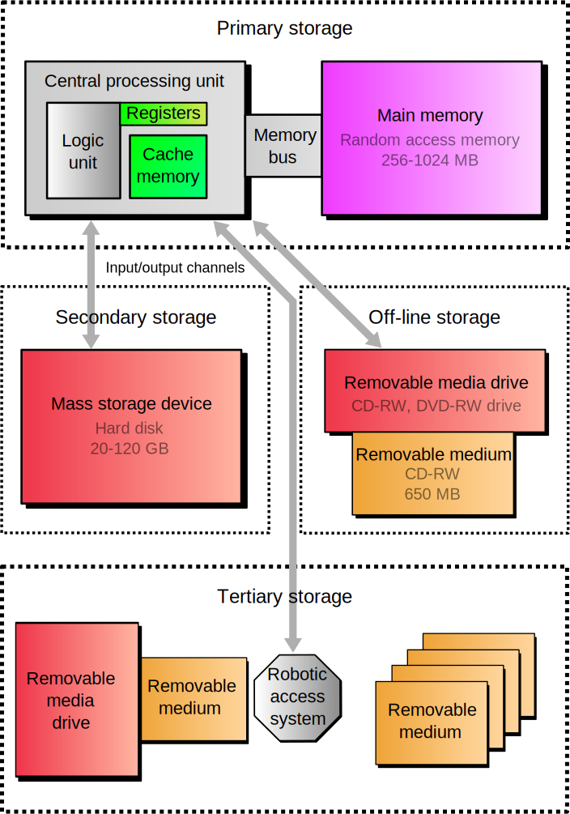

overview of techCmpr
description::
· computer is an-info-machine that processes human and machine-information.
name::
* McsEngl.McsTchInf000003.last.html//dirTchInf//dirMcs!⇒techCmpr,
* McsEngl.dirMcs/dirTchInf/McsTchInf000003.last.html!⇒techCmpr,
* McsEngl.cmr!⇒techCmpr,
* McsEngl.cmpr!⇒techCmpr,
* McsEngl.computator!⇒techCmpr, {2023-08-23},
* McsEngl.computer!⇒techCmpr,
* McsEngl.computer-machine!⇒techCmpr,
* McsEngl.computer-system!⇒techCmpr,
* McsEngl.info-machine.computer!⇒techCmpr,
* McsEngl.informator!⇒techCmpr, {2023-08-23},
* McsEngl.machine.info.computer!⇒techCmpr,
* McsEngl.techCmpr,
* McsEngl.techCmpr!=McsTchInf000003,
* McsEngl.techCmpr!=computer-machine,
====== langoChinese:
* McsZhon.diànnǎo-电脑!=techCmpr::electric-brain,
* McsZhon.电脑-diànnǎo!=techCmpr::electric-brain,
* McsZhon.jìsuànjī-计算机!=techCmpr::calculating-machine,
* McsZhon.计算机-jìsuànjī!=techCmpr::calculating-machine, technical-formal,
====== langoGreek:
* McsElln.υπολογιστής!ο!=techCmpr,
====== langoTurkish:
* McsTurk.bilgisayar!=techCmpr,
01_hardware of techCmpr
description::
· hardware of computer\a\ is any physical, tangible part of it\a\.
name::
* McsEngl.Cmrhardware,
* McsEngl.techCmpr'01_hardware!⇒Cmrhardware,
* McsEngl.techCmpr'att001-hardware!⇒Cmrhardware,
* McsEngl.techCmpr'hardware-att001!⇒Cmrhardware,
* McsEngl.techCmpr-hardware!⇒Cmrhardware,
* McsEngl.computer-hardware!⇒Cmrhardware,
* McsEngl.hardware-of-computer!⇒Cmrhardware,
====== langoChinese:
* McsZhon.yìngtǐ-硬体-(硬體)!=Cmrhardware,
* McsZhon.硬体-(硬體)-yìngtǐ!=Cmrhardware,
====== langoGreek:
* McsElln.υλικό-υπολογιστή!=Cmrhardware,
hardware.SPECIFIC of techCmpr
description::
* processor-unit,
* storage-unit,
* input-unit,
* output-unit,
name::
* McsEngl.Cmrhardware.specific,
hardware.processor of techCmpr
description::
· processor of a-computer\a\ is its\a\ unit that performs the-info-processing task.
name::
* McsEngl.techCmpr'processor!⇒techCmpr-processor,
* McsEngl.Cmrhardware.processor!⇒techCmpr-processor,
* McsEngl.techCmpr-processor,
* McsEngl.computer-processor!⇒techCmpr-processor,
* McsEngl.processor-of-computer!⇒techCmpr-processor,
====== langoChinese:
* McsZhon.chǔlǐqì-处理器-(處理器)!=techCmpr-processor,
* McsZhon.处理器-(處理器)-chǔlǐqì!=techCmpr-processor,
processor.SPECIFIC of techCmpr
description::
· alphabetically:
* CPU – central processing unit,
* DSP – digital signal processor,
* GPU – graphics processing unit,
* ISP – image signal processor,
* NPU – neural processing unit,
* PPU – physics processing unit,
* SPU or SPE – synergistic processing element in Cell microprocessor,
* TPU – tensor processing unit,
* VPU – vision processing unit,
* FPGA – field-programmable gate array,
* general-purpose--CPU,
* general-purpose.no--CPU,
* integrated-circuit--CPU,
* mechanical-CPU,
* microprocessor,
* sound chip,
* transistor-CPU,
* vacuum-tube--CPU,
name::
* McsEngl.techCmpr-processor.specific,
processor.CPU of techCmpr
description::
· computer-CPU is the-main processing unit of a-computer.
name::
* McsEngl.CPU-of-computer!⇒techCmpr-Cpu,
* McsEngl.central-processing-unit--of-computer!⇒techCmpr-Cpu,
* McsEngl.techCmpr'CPU!⇒techCmpr-Cpu,
* McsEngl.techCmpr-Cpu,
* McsEngl.Cmrhardware.CPU!⇒techCmpr-Cpu,
* McsEngl.techCmpr-processor.CPU!⇒techCmpr-Cpu,
* McsEngl.computer-CPU!⇒techCmpr-Cpu,
processor.CPU.NO of techCmpr
processor.microprocessor of techCmpr
description::
· a-microprocessor is one or more central-processing-units on a-single integrated-circuit.
name::
* McsEngl.techCmpr-Cpu.microprocessor!⇒techCmpr-microprocessor,
* McsEngl.techCmpr-microprocessor,
* McsEngl.computer-microprocessor!⇒techCmpr-microprocessor,
* McsEngl.microprocessor-of-computer!⇒techCmpr-microprocessor,
hardware.memory of techCmpr
description::
· techCmpr-memory is hardware that stores software\a\ TEMPORARILY for processing and the-Cpu access it\a\ directly.
· you will-see to call it 'PRIMARY STORAGE'.

[https://upload.wikimedia.org/wikipedia/commons/3/3e/Computer_storage_types.svg]
name::
* McsEngl.Cpu-accessible--computer-storage!⇒Cmrmemory,
* McsEngl.Cmrmemory,
* McsEngl.techCmpr'memory!⇒Cmrmemory,
* McsEngl.techCmpr-memory!⇒Cmrmemory,
* McsEngl.computer-memory!⇒Cmrmemory,
* McsEngl.memory-of-computer!⇒Cmrmemory,
* McsEngl.primary-storage-of-computer!⇒Cmrmemory,
====== langoGreek:
* McsElln.μνήμη-υπολογιστή!=Cmrmemory,
memory.specifics-division.Cpu
description::
· division on location: inside Cpu or not:
* internal-memory,
* internalNo-memory,
name::
* McsEngl.Cmrmemory.specifics-division.Cpu,
memory.internal of techCmpr
description::
· internal-memory is memory inside the-Cpu.
name::
* McsEngl.techCmpr-internal-memory,
* McsEngl.Cmrmemory.internal!⇒techCmpr-internal-memory,
interal--Cpu-storage.cache of techCmpr
description::
"Processor cache is an intermediate stage between ultra-fast registers and much slower main memory. It was introduced solely to improve the performance of computers. Most actively used information in the main memory is just duplicated in the cache memory, which is faster, but of much lesser capacity. On the other hand, main memory is much slower, but has a much greater storage capacity than processor registers. Multi-level hierarchical cache setup is also commonly used—primary cache being smallest, fastest and located inside the processor; secondary cache being somewhat larger and slower."
[{2020-04-04} https://en.wikipedia.org/wiki/Computer_data_storage#Primary_storage]
name::
* McsEngl.Cmrcache,
* McsEngl.cache-of-computer!⇒Cmrcache,
* McsEngl.techCmpr'cache!⇒Cmrcache,
* McsEngl.techCmpr-Cpu-cache!⇒Cmrcache,
* McsEngl.techCmpr-cache!⇒Cmrcache,
* McsEngl.techCmpr-internal-memory.cache!⇒Cmrcache,
* McsEngl.processor-cache!⇒Cmrcache,
interal--Cpu-storage.register of techCmpr
description::
"Processor registers are located inside the processor. Each register typically holds a word of data (often 32 or 64 bits). CPU instructions instruct the arithmetic logic unit to perform various calculations or other operations on this data (or with the help of it). Registers are the fastest of all forms of computer data storage."
[https://en.wikipedia.org/wiki/Computer_data_storage#Primary_storage]
name::
* McsEngl.Cmrregister,
* McsEngl.techCmpr'register!⇒Cmrregister,
* McsEngl.techCmpr-Cpu-register!⇒Cmrregister,
* McsEngl.techCmpr-register!⇒Cmrregister,
* McsEngl.techCmpr-internal-memory.register!⇒Cmrregister,
* McsEngl.processor-register!⇒Cmrregister,
memory.internalNo of techCmpr
description::
· internalNo-memory is memory external to Cpu.
name::
* McsEngl.CmrRam,
* McsEngl.RAM!⇒CmrRam,
* McsEngl.techCmpr'RAM!⇒CmrRam,
* McsEngl.techCmpr-RAM!⇒CmrRam,
* McsEngl.techCmpr-internalNo-memory!⇒CmrRam,
* McsEngl.Cmrmemory.internalNo!⇒CmrRam,
* McsEngl.main-memory-of-computer!⇒CmrRam,
hardware.storage of techCmpr
description::
· storage of computer\a\ is hardware that stores its\a\ software PERMANENTLY.
"Secondary storage (also known as external memory or auxiliary storage), differs from primary storage in that it is not directly accessible by the CPU. The computer usually uses its input/output channels to access secondary storage and transfer the desired data to primary storage. Secondary storage is non-volatile (retaining data when power is shut off)."
[https://en.wikipedia.org/wiki/Computer_data_storage#Secondary_storage]
[https://upload.wikimedia.org/wikipedia/commons/3/3e/Computer_storage_types.svg]
name::
* McsEngl.Cmrstorage,
* McsEngl.techCmpr'storage!⇒Cmrstorage,
* McsEngl.Cmrhardware.storage!⇒Cmrstorage,
* McsEngl.techCmpr-storage!⇒Cmrstorage,
* McsEngl.primaryNo-storage-of-computer!⇒Cmrstorage,
* McsEngl.storage-of-computer!⇒Cmrstorage,
====== langoGreek:
* McsElln.αποθήκη-υπολογιστή!=Cmrstorage,
Cmrstorage.SPECIFIC
description::
· alphabetically:
* CD-drive,
* DVD-drive,
* USB-drive,
* floppy-disk,
* hard-disk-drive-(HDD),
* magnetic-tape,
* optical-storage,
* solid-state-drive-(SSD),
name::
* McsEngl.techCmpr-CpuNo-storage.specific,
addressWpg::
* https://twitter.com/historylvrsclub/status/1167893075126931460,
Cmrstorage.USB-drive
description::
· TROUBLESHOOTING:
- open device-manager and add drive-letter.
name::
* McsEngl.Cmrstorage.USB-drive,
* McsEngl.Cmrtroubleshooting.USB-drive-not-showing-up,
* McsEngl.USB-hard-disk,
hardware.input of techCmpr
description::
·
name::
* McsEngl.Cmrhardware.input!⇒techCmpr-input-hardware,
* McsEngl.techCmpr-input-hardware,
* McsEngl.input-hardware-of-computer!⇒techCmpr-input-hardware,
hardware.output of techCmpr
description::
·
name::
* McsEngl.Cmrhardware.output!⇒techCmpr-output-hardware,
* McsEngl.techCmpr-output-hardware,
* McsEngl.output-hardware-of-computer!⇒techCmpr-output-hardware,
02_software of techCmpr
description::
· software of computer\a\ is the-part-complement of hardware, ie the-data that it\a\ processes[b] and the-algorithms that uses to do it[b].
name::
* McsEngl.techCmpr'02_software!⇒techCmpr-software,
* McsEngl.techCmpr'att002-software!⇒techCmpr-software,
* McsEngl.techCmpr'software!⇒techCmpr-software,
* McsEngl.techCmpr-software,
* McsEngl.computer-software!⇒techCmpr-software,
* McsEngl.information-of-computer!⇒techCmpr-software,
* McsEngl.software-of-computer!⇒techCmpr-software,
====== langoChinese:
* McsZhon.ruǎnjiàn-软件-(軟件)!=techCmpr-software,
* McsZhon.软件-(軟件)-ruǎnjiàn!=techCmpr-software,
language (link) of software of techCmpr
software.SPECIFIC of techCmpr
description::
* data,
* algorithm,
name::
* McsEngl.techCmpr-sotware.specific,
software.data of techCmpr
description::
· data of computer is input or output information of a-computer.
name::
* McsEngl.techCmpr'data!⇒techCmpr-data,
* McsEngl.techCmpr-data,
* McsEngl.techCmpr-software.data!⇒techCmpr-data,
* McsEngl.computer-data!⇒techCmpr-data,
* McsEngl.data-of-cmrdata!⇒techCmpr-data,
software.algorithm (link) of techCmpr
03_health-issue of techCmpr
name::
* McsEngl.techCmpr'03_health-issue,
* McsEngl.techCmpr'att003-health-issue,
* McsEngl.techCmpr'health-issue-att003,
* McsEngl.techCmpr'health-issue,
* McsEngl.computer-induced-medical-problem,
* McsEngl.diseaseFrom-computer,
* McsEngl.disease.252-computer-induced,
* McsEngl.disease.computer-induced-252,
description::
"Computer-induced health problems can be an umbrella term for the various problems a computer user can develop from extended and incorrect computer use. A computer user may experience many physical health problems from using computers extensively over a prolonged period of time in an inefficient manner. The computer user may have poor etiquette when using peripherals, for example incorrect posture. Reportedly, excessive use of electronic screen media can have ill effects on mental health related to mood, cognition, and behavior, even to the point of hallucination.[1]"
[https://en.wikipedia.org/wiki/Computer-induced_medical_problems]
specific-tree-of-diseaseFrom-computer::
* carpal-tunnel-syndrome-CTS,
* computer-mental-disorder,
* computer-musculoskeletal-disorder,
* computer-vision-syndrome,
* sleep-disorder,
interface of techCmpr
description::
· "In computing, an interface is a shared boundary across which two or more separate components of a computer system exchange information. The exchange can be between software, computer hardware, peripheral devices, humans, and combinations of these.[1] Some computer hardware devices, such as a touchscreen, can both send and receive data through the interface, while others such as a mouse or microphone may only provide an interface to send data to a given system.[2]"
[{2023-08-02 retrieved} https://en.wikipedia.org/wiki/Interface_(computing)]
name::
* McsEngl.Cmrinterface,
* McsEngl.techCmpr'att004-interface!⇒Cmrinterface,
* McsEngl.techCmpr'interface!⇒Cmrinterface,
Cmrinterface.hardware
description::
· "Hardware interfaces exist in many components, such as the various buses, storage devices, other I/O devices, etc. A hardware interface is described by the mechanical, electrical, and logical signals at the interface and the protocol for sequencing them (sometimes called signaling).[3] A standard interface, such as SCSI, decouples the design and introduction of computing hardware, such as I/O devices, from the design and introduction of other components of a computing system, thereby allowing users and manufacturers great flexibility in the implementation of computing systems.[3] Hardware interfaces can be parallel with several electrical connections carrying parts of the data simultaneously or serial where data are sent one bit at a time.[4]"
[{2023-08-02 retrieved} https://en.wikipedia.org/wiki/Interface_(computing)]
name::
* McsEngl.Cmrinterface.hardware,
* McsEngl.hardware-interface,
Cmrinterface.software
description::
· "A software interface may refer to a wide range of different types of interface at different "levels". For example, an operating system may interface with pieces of hardware. Applications or programs running on the operating system may need to interact via data streams, filters, and pipelines.[5] In object oriented programs, objects within an application may need to interact via methods.[6]"
[{2023-08-02 retrieved} https://en.wikipedia.org/wiki/Interface_(computing)]
name::
* McsEngl.Cmrinterface.software,
* McsEngl.Softinterface,
* McsEngl.software-interface,
Softinterface.SPECIFIC
description::
· ABI,
· API,
name::
* McsEngl.Softinterface.specific,
Softinterface.ABI
description::
· "In computer software, an application binary interface (ABI) is an interface between two binary program modules. Often, one of these modules is a library or operating system facility, and the other is a program that is being run by a user.
An ABI defines how data structures or computational routines are accessed in machine code, which is a low-level, hardware-dependent format. In contrast, an API defines this access in source code, which is a relatively high-level, hardware-independent, often human-readable format. A common aspect of an ABI is the calling convention, which determines how data is provided as input to, or read as output from, computational routines. Examples of this are the x86 calling conventions.
Adhering to an ABI (which may or may not be officially standardized) is usually the job of a compiler, operating system, or library author. However, an application programmer may have to deal with an ABI directly when writing a program in a mix of programming languages, or even compiling a program written in the same language with different compilers.
An ABI is as important as the underlying hardware architecture. The program will fail equally if it violates any constraints of these two."
[{2023-08-02 retrieved} https://en.wikipedia.org/wiki/Application_binary_interface]
name::
* McsEngl.ABI!=application-binary-interface,
* McsEngl.Softinterface.ABI,
Cmrinterface.user
description::
· "A user interface is a point of interaction between a computer and humans; it includes any number of modalities of interaction (such as graphics, sound, position, movement, etc.) where data is transferred between the user and the computer system."
[{2023-08-02 retrieved} https://en.wikipedia.org/wiki/Interface_(computing)]
name::
* McsEngl.Cmrinterface.user,
* McsEngl.user-interface,
04_resource of techCmpr
name::
* McsEngl.techCmpr'04_resource,
* McsEngl.techCmpr'attResource,
* McsEngl.techCmpr'Infrsc,
addressWpg::
* https://waxy.org/2008/06/the_machine_that_changed_the_world_the_thinking_machine/,
05_structure of techCmpr
name::
* McsEngl.techCmpr'05_structure,
* McsEngl.techCmpr'attStructure,
* McsEngl.techCmpr'structure,
description::
* hardware,
* software,
06_DOING of techCmpr
name::
* McsEngl.techCmpr'06_doing!⇒techCmpr-doing,
* McsEngl.techCmpr'attDoing!⇒techCmpr-doing,
* McsEngl.techCmpr'doing!⇒techCmpr-doing,
* McsEngl.techCmpr-doing,
doing.SPECIFIC of techCmpr
description::
* main-functing,
* evoluting,
name::
* McsEngl.techCmpr-doing.specific,
doing.main-functing of techCmpr
description::
· main-functing of techCmpr\a\ is the-info-process for which it\a\ is-built to do.
name::
* McsEngl.techCmpr'main-functing!⇒techCmpr-usage,
* McsEngl.techCmpr-doing.main-functing!⇒techCmpr-usage,
* McsEngl.techCmpr-usage,
* McsEngl.computation//techCmpr!⇒techCmpr-usage,
* McsEngl.computer-usage!⇒techCmpr-usage,
doing.cloning-system-disk of techCmpr
description::
· task: replace old SSD of 250MB with the-operating-system with another of 1TB because the-first was full, WITHOUT reinstalling the-system.
· on WINDOWS-10:
* install the-hardware.
* right-click on start and open 'Disk Management'.
* initialize the-disk with GPT partition style.
* install 'NIUBI Partition Editor Free Edition-(NPE)'
* execute 'Clone Disk Wizard' in NPE, and expand the-volume of data on all unallocated space in new disk (read the-help).
* on BIOS set the-new disk to boot first.
* do-not-add volumes after initialization.
* other 'free' programs (Macrium Reflect, AOMEI Backupper, MiniTool Partition Wizard) ask to pay to do most of these tasks.
* CloneZilla which needs a-live-Usb has no friedly user-interface and does-not-allocate the-new space.
name::
* McsEngl.cloning-system-disk-of-techCmpr,
* McsEngl.techCmpr'cloning-system-disk,
* McsEngl.techCmpr-doing.cloning-system-disk,
* McsEngl.replacing-system-disk-of-techCmpr,
====== langoGreek:
* McsElln.αντικατάσταση-δίσκου-συστήματος-υπολογιστή,
* McsElln.κλωνοποίηση-δίσκου-συστήματος-υπολογιστή,
07_EVOLUTING of techCmpr
name::
* McsEngl.techCmpr'07_evoluting,
* McsEngl.techCmpr'attEvoluting,
* McsEngl.techCmpr'evoluting,
{1975}-techCmpr-portable-computer::
"A portable computer was a computer designed to be easily moved from one place to another and included a display and keyboard. The first commercially sold portable was the 50 pound IBM 5100, introduced 1975."
[https://en.wikipedia.org/wiki/Portable_computer]
* McsEngl.{science'1975}-techCmpr-portable-computer,
{1956}-techCmpr-operating-system::
"The first operating system used for real work was GM-NAA I/O, produced in 1956 by General Motors' Research division[ for its IBM 704."
[https://en.wikipedia.org/wiki/History_of_operating_systems#Mainframes]
* McsEngl.{science'1956}-operating-system,
{1953-11}-techCmpr-transistor-computer::
· the-first transistor-computer in the world, became operational in November 1953 at the-University-of-Manchester by a-team under the-leadersipt of Tom-Kilburn.
[https://en.wikipedia.org/wiki/Manchester_computers#Transistor_Computer]
* McsEngl.{science'1953-11}-techCmpr-transistor-computer,
{1948}-techCmpr-strored-program-computer::
"The Manchester Baby, also known as the Small-Scale Experimental Machine (SSEM), was the world's first electronic stored-program computer. It was built at the University of Manchester, England, by Frederic C. Williams, Tom Kilburn, and Geoff Tootill, and ran its first program on 21 June 1948,"
[https://en.wikipedia.org/wiki/Manchester_Baby]
* McsEngl.{science'1948}-techCmpr-strored-program-computer,
{1942}-techCmpr-electronic-binary-computer:
· the Atanasoff–Berry-computer (ABC) is the-first electronic binary but not program-controlled and not turing-complete.
[https://en.wikipedia.org/wiki/Atanasoff%E2%80%93Berry_computer]
* McsEngl.{science'1942}-techCmpr-electronic-binary-computer,
{1941}-techCmpr-elecromechanical-program-controlled-binary::
"The Z3 was a German electromechanical computer designed by Konrad Zuse. It was the world's first working programmable, fully automatic digital computer. The Z3 was built with 2,600 relays, implementing a 22-bit word length that operated at a clock frequency of about 4–5 Hz. Program code was stored on punched film. Initial values were entered manually."
[https://en.wikipedia.org/wiki/Z3_(computer)]
---
"In 1941 Konrad Zuse completed the Z3 (computer), the first working Turing-complete machine; this was the first digital computer in the modern sense."
[https://en.wikipedia.org/wiki/Turing_completeness]
* McsEngl.{science'1941}-techCmpr-elecromechanical-program-controlled-binary,
{1840i10}-techCmpr-design-program-controlled-computer::
"The first design for a program-controlled computer was Charles Babbage's Analytical Engine in the 1830s."
[https://en.wikipedia.org/wiki/Manchester_Baby]
* McsEngl.{science'1840i10}-techCmpr-design-program-controlled-computer,
{Bce0100≈}-techCmpr-first-analog::
=== Antikythera-mechanism first analog:
"The Antikythera mechanism is an ancient Greek analogue computer used to predict astronomical positions and eclipses for calendar and astrological purposes decades in advance. It could also be used to track the four-year cycle of athletic games which was similar to an Olympiad, the cycle of the ancient Olympic Games."
[https://en.wikipedia.org/wiki/Antikythera_mechanism]
* McsEngl.{science'Bce100≈}-techCmpr-first-analog,
WHOLE-PART-TREE of techCmpr
name::
* McsEngl.techCmpr'whole-part-tree,
whole-tree-of-::
* household,
===
* computer-network,
GENERIC-SPECIFIC-TREE of techCmpr
name::
* McsEngl.techCmpr'generic-specific-tree,
generic-tree-of-::
* info-machine,
* machine,
...
* entity,
att-inherited-from::
*
att-own-of-::
*
techCmpr.SPECIFIC
name::
* McsEngl.techCmpr.specific,
specific::
* analog-computer,
* binary-computer,
* digital-computer,
* mechanical-computer,
* transistor-computer,
* trinary-computer,
* quantum-computer,
addressWpg::
* https://en.wikipedia.org/wiki/Category:Classes_of_computers,
techCmpr.specifics-division.decade
description::
· on 2010s:
* modern2010s-computer,
* old2010s-computer,
* future2010s-computer,
name::
* McsEngl.techCmpr.specifics-division.decade,
techCmpr.specifics-division.hardware
description::
· on hardware:
* mechanical-computer,
* electro-mechanical-computer,
* electronic-computer:,
* electronic.vacuum-tube--computer,
* electronic.transistor-computer,
* electronic.microchip-computer,
name::
* McsEngl.techCmpr.specifics-division.hardware,
techCmpr.mechanical
description::
"A mechanical computer is built from mechanical components such as levers and gears, rather than electronic components. The most common examples are adding machines and mechanical counters, which use the turning of gears to increment output displays."
[https://en.wikipedia.org/wiki/Mechanical_computer]
name::
* McsEngl.techCmpr.mechanical!⇒cmrMechanical,
* McsEngl.cmrMechanical,
techCmpr.electro-mechanical
description::
· electro-mechanical--computer is a-computer with electric-switches that drive mechanical-relays to perform computations.
name::
* McsEngl.techCmpr.electro-mechanical,
* McsEngl.electro-mechanical--computer,
* McsEngl.relay-computer,
addressWpg::
* https://en.wikipedia.org/wiki/Category:Electro-mechanical_computers,
techCmpr.electronic
description::
· electronic-computer is a-computer that uses electronic components such as vacuum-tubes, transistors, microchips.
name::
* McsEngl.techCmpr.electronic,
* McsEngl.electronic-computer,
techCmpr.vacuum-tube
description::
"Vacuum tube computers, now termed first generation computers, are programmable digital computers using vacuum tube logic circuitry. They were preceded by systems using electromechanical relays and followed by systems built from discrete transistors."
[https://en.wikipedia.org/wiki/List_of_vacuum_tube_computers]
name::
* McsEngl.techCmpr.vacuum-tube!⇒cmrVtube,
* McsEngl.cmrVtube,
* McsEngl.first-generation-computer!⇒cmrVtube,
* McsEngl.tube-computer!⇒cmrVtube,
* McsEngl.vacuum-tube-computer!⇒cmrVtube,
info-resource of cmrVtube
name::
* McsEngl.cmrVtube'Infrsc,
addressWpg::
* https://en.wikipedia.org/wiki/Vacuum_tube_computer,
* https://en.wikipedia.org/wiki/List_of_vacuum_tube_computers,
EVOLUTING of cmrVtube
name::
* McsEngl.cmrVtube'evoluting,
{1942}::
=== Atanasoff-Berry-computer:
"The Atanasoff–Berry computer (ABC) was the first automatic electronic digital computer, an early electronic digital computing device that has remained somewhat obscure. The ABC's priority is debated among historians of computer technology, because it was neither programmable, nor Turing-complete.
Conceived in 1937, the machine was built by Iowa State College mathematics and physics professor John Vincent Atanasoff with the help of graduate student Clifford Berry. It was designed only to solve systems of linear equations and was successfully tested in 1942."
[https://en.wikipedia.org/wiki/Atanasoff%E2%80%93Berry_computer]
{1939}::
=== Atanasoff-Berry-computer-prototype:
"The Atanasoff–Berry computer, a prototype of which was first demonstrated in 1939, is now credited as the first vacuum tube computer. However it was not a general-purpose computer being able to only solve a system of linear equations and it was also not very reliable."
[{2014-06-01} https://en.wikipedia.org/wiki/Vacuum_tube_computer]
techCmpr.transistor
description::
"A transistor computer, now often called a second generation computer,[1] is a computer which uses discrete transistors instead of vacuum tubes. The first generation of electronic computers used vacuum tubes, which generated large amounts of heat, were bulky and unreliable. A second generation of computers, through the late 1950s and 1960s featured circuit boards filled with individual transistors and magnetic core memory. These machines remained the mainstream design into the late 1960s, when integrated circuits started appearing and led to the third-generation machines."
[https://en.wikipedia.org/wiki/Transistor_computer]
name::
* McsEngl.techCmpr.transistor,
* McsEngl.second-generation--computer,
* McsEngl.transistor-computer,
* McsEngl.transistorized-computer,
addressWpg::
* https://en.wikipedia.org/wiki/List_of_transistorized_computers,
techCmpr.integrated-circuit
description::
· integrated-circuit--computer is an-electronic-computer that uses integrated-circuits.
name::
* McsEngl.IC-computer!⇒cmrChip,
* McsEngl.techCmpr.microchip!⇒cmrChip,
* McsEngl.cmrChip,
* McsEngl.integrated-circuit--computer!⇒cmrChip,
cmrChip.SPECIFIC
description::
· on CPU:
* LSI-CPU--computer,
* SSI-CPU--computer,
* microprocessor-computer,
name::
* McsEngl.cmrChip.specific,
cmrChip.microprocessor
description::
· microprocessor-computer is a-chip-computer with one microprocessor as CPU.
name::
* McsEngl.techCmpr.microprocessor!⇒cmrMicroprocessor,
* McsEngl.cmrChip.microprocessor!⇒cmrMicroprocessor,
* McsEngl.microcomputer!⇒cmrMicroprocessor,
* McsEngl.microprocessor-computer!⇒cmrMicroprocessor,
addressWpg::
* https://en.wikipedia.org/wiki/Microcomputer,
* https://en.wikipedia.org/wiki/Lists_of_microcomputers,
techCmpr.SoC
description::
"A system on a chip or system on chip is an integrated circuit (also known as a "chip") that integrates all components of a computer or other electronic system. These components typically (but not always) include a central processing unit (CPU), memory, input/output ports and secondary storage – all on a single substrate or microchip, the size of a coin. It may contain digital, analog, mixed-signal, and often radio frequency signal processing functions, depending on the application."
[https://en.wikipedia.org/wiki/System_on_a_chip]
name::
* McsEngl.SoC-computer!⇒cmrOnchip,
* McsEngl.techCmpr.system-on-chip!⇒cmrOnchip,
* McsEngl.cmrOnchip,
techCmpr.specifics-division.program
description::
· if they are-controlled with a-program or not:
* programable-computer,
* programableNo-computer,
name::
* McsEngl.techCmpr.specifics-division.program,
techCmpr.programable
description::
· programable-computer is a-computer which it is-controlled by a-program.
name::
* McsEngl.techCmpr.programable,
* McsEngl.program-controlled--computer,
* McsEngl.programable-computer,
specific::
* stored-program--programable-computer,
* stored-program.no--programable-computer,
techCmpr.stored-program programable-computer
description::
"A stored-program computer is a computer that stores program instructions in electronic memory. This contrasts with machines where the program instructions are stored on plugboards or similar mechanisms."
[https://en.wikipedia.org/wiki/Stored-program_computer]
name::
* McsEngl.stored-program--programable-computer,
techCmpr.stored-program.no programable-computer
description::
"Early computers such as the ENIAC had to be physically rewired to perform different tasks, which caused these machines to be called "fixed-program computers". Since the term "CPU" is generally defined as a device for software (computer program) execution, the earliest devices that could rightly be called CPUs came with the advent of the stored-program computer."
[https://en.wikipedia.org/wiki/Central_processing_unit]
name::
* McsEngl.fixed-program--computer,
* McsEngl.stored-program.no--programable-computer,
techCmpr.programableNo
description::
· programableNo-computer is a-computer which it is-NOT-controlled by a-program.
name::
* McsEngl.techCmpr.programableNo,
* McsEngl.programableNo-computer,
techCmpr.specifics-division.Os
description::
· division on if has operating-system:
* Os-techCmpr,
* OsNo-techCmpr,
name::
* McsEngl.techCmpr.specifics-division.Os,
techCmpr.Os
description::
· Os-computer is a-computer WITH an-operating-system.
==
"The first operating system used for real work was GM-NAA I/O, produced in 1956 by General Motors' Research division for its IBM 704."
[https://en.wikipedia.org/wiki/History_of_operating_systems#Mainframes]
name::
* McsEngl.Os-computer!⇒cmrOs,
* McsEngl.techCmpr.Os!⇒cmrOs,
* McsEngl.cmrOs,
* McsEngl.operating-system--computer!⇒cmrOs,
techCmpr.OsNo
description::
· OsNo-computer is a-computer WITHOUT an-operating-system.
name::
* McsEngl.OsNo-computer!⇒cmrOsNo,
* McsEngl.techCmpr.OsNo!⇒cmrOsNo,
* McsEngl.cmrOsNo,
* McsEngl.operating-system.no--computer!⇒cmrOsNo,
techCmpr.specifics-division.digital-info
description::
* digital-computer,
* digitalNo-computer,
name::
* McsEngl.techCmpr.specifics-division.digital-info,
techCmpr.digital
description::
· digital-computer is a-computer that process digital-information (information represented with discrete quantities) eg binary, trinary, ...
name::
* McsEngl.cmp.digital,
* McsEngl.digital-computer,
techCmpr.digitalNo (analog)
description::
· analog-computer is a-computer that process analog-information (information represented with continuous quantities) eg distance, area, time, ...
name::
* McsEngl.analog-computer,
* McsEngl.techCmpr.digitalNo,
techCmpr.specifics-division.main-functing
description::
· on main-functing:
* general-purpose--computer,
* general-purpose.no--computer,
name::
* McsEngl.techCmpr.specifics-division.main-functing,
techCmpr.general-purpose
description::
· general-purpose--computer is a-computer with main-function ANY info-processing task.
name::
* McsEngl.techCmpr.general-purpose,
* McsEngl.general-purpose--computer,
* McsEngl.Turing-complete--computer,
addressWpg::
* Rudd-Canaday, Early Turing-complete Computers, http://www.ruddcanaday.com/post-ww2-computers/,
techCmpr.general-purpose.no
description::
· special-purpose--computer is a-computer with main-function a-specific task.
name::
* McsEngl.cmp.general-purpose.no,
* McsEngl.special-purpose--computer,
techCmpr.specifics-division.reality
description::
· on reality:
* real-computer:
* real.physical-computer,
* real.virtual-computer,
* realNo-computer,
name::
* McsEngl.techCmpr.specifics-division.reality,
techCmpr.real
description::
· real-computer is a-computer that works.
name::
* McsEngl.techCmpr.real!⇒cmrReal,
* McsEngl.cmrReal,
* McsEngl.real-computer!⇒cmrReal,
specific::
=== on-hardware:
* physical-computer,
* virtual-computer,
techCmpr.realNo
description::
· realNo-computer\a\ is a-computer that does-not-work in reality.
· it\a\ is simpler than a-real, usually auto-manages its\a\ memory, and it\a\ is independent of operating-systems.
name::
* McsEngl.abstract-computer!⇒cmrAbstract,
* McsEngl.techCmpr.realNo!⇒cmrAbstract,
* McsEngl.cmrAbstract,
* McsEngl.hypothetical-computer!⇒cmrAbstract,
* McsEngl.imaginary-computer!⇒cmrAbstract,
* McsEngl.theoritical-computer!⇒cmrAbstract,
realNo.source techCmpr
description::
· source-computer is a-realNo-techCmpr that understands source-language.
name::
* McsEngl.techCmpr.source,
* McsEngl.source-computer,
techCmpr.physical
description::
· physical-computer is a-real-computer implemented in hardware.
· a-physical-machine\a\ works with machine-code today with binary-code which includes an-instruction-set, it\a\ has memory-areas and it\a\ is operating-system dependent.
name::
* McsEngl.techCmpr.physical!⇒cmrPhysical,
* McsEngl.cmrPhysical,
* McsEngl.physical-computer!⇒cmrPhysical,
techCmpr.virtual
description::
· virtual-computer\a\ is a-real-computer implemented in software.
· it\a\ works with binary-code, it\a\ has memory managed with the-code, but it\a\ is independent of operating-systems.
name::
* McsEngl.techCmpr.virtual!⇒cmrVirtual,
* McsEngl.cmrVirtual,
* McsEngl.virtual-computer!⇒cmrVirtual,
* McsEngl.virtual-machine!⇒cmrVirtual,
specific::
* register-vm,
* stack-vm,
techCmpr.specifics-division.size
description::
· on size:
* large-techCmpr,
* desktop-techCmpr,
* small-techCmpr,
name::
* McsEngl.techCmpr.specifics-division.size,
techCmpr.large
description::
· large-computer I call a-computer bigger than a-desktop.
name::
* McsEngl.techCmpr.large,
* McsEngl.cmrLarge,
* McsEngl.large-computer,
techCmpr.desktop
description::
· desktop-computer is a-computer that we use at a-single location on or near tables.
name::
* McsEngl.techCmpr.desktop,
* McsEngl.cmrDesktop,
* McsEngl.desktop-computer,
techCmpr.small
description::
· small-computer I call a-computer smaller than a-desktop we can-carry with us.
name::
* McsEngl.techCmpr.small,
* McsEngl.cmrSmall,
* McsEngl.small-computer,
specific::
* laptop-computer,
* tablet-computer,
* fablet-computer,
* smartphone,
techCmpr.binary-001
description::
· binary-computer is a-digital-computer that processes binary-info.
name::
* McsEngl.binary-computer!⇒cmrBnr,
* McsEngl.techCmpr.001-binary!⇒cmrBnr,
* McsEngl.techCmpr.binary!⇒cmrBnr,
* McsEngl.cmrBnr,
* McsEngl.computer.binary!⇒cmrBnr,
programing-language (link) of cmrBnr
techCmpr.quantum-002
description::
· quantum-computer is a-digital-computer that uses more that 2-digits to encode information.
name::
* McsEngl.cmprQtm,
* McsEngl.cmprQtm!=quantum-computer,
* McsEngl.techCmpr.002-quantum!⇒cmprQtm,
* McsEngl.techCmpr.quantum!⇒cmprQtm,
* McsEngl.quantum-computer!⇒cmprQtm,
info-resource of cmprQtm
description::
* {2021-06-16} https://www.weforum.org/agenda/2021/06/quantum-revolution-is-almost-here-we-need-to-make-sure-it-benefits-the-many-not-the-few,
* {2020-12-03} Physicists in China challenge Google’s ‘quantum advantage’: Photon-based quantum computer does a calculation that ordinary computers might never be able to do, https://www.nature.com/articles/d41586-020-03434-7,
name::
* McsEngl.cmprQtm'Infrsc,
evoluting of cmprQtm
{2020}::
2020: IBM demonstrates that its 65-qubit quantum processor can perform calculations beyond the reach of any classical computer
[{2023-09-15 retrieved} https://twitter.com/PhysInHistory/status/1702696371893993821]
{2019}::
2019: Google announces that it has achieved quantum supremacy by performing a calculation on a 53-qubit quantum processor that would take a classical supercomputer thousands of years to complete
[{2023-09-15 retrieved} https://twitter.com/PhysInHistory/status/1702696371893993821]
{2007}::
2007: D-Wave Systems claims to have built the first commercial quantum computer, but its validity is disputed by many experts
[{2023-09-15 retrieved} https://twitter.com/PhysInHistory/status/1702696371893993821]
{2001}::
2001: IBM researchers implement Grover’s algorithm using NMR techniques and achieve a modest speedup over classical algorithms
[{2023-09-15 retrieved} https://twitter.com/PhysInHistory/status/1702696371893993821]
{2000}::
2000: David DiVincenzo proposes five criteria for building a practical quantum computer, known as the DiVincenzo criteria
[{2023-09-15 retrieved} https://twitter.com/PhysInHistory/status/1702696371893993821]
{1997}::
1997: Isaac Chuang, Neil Gershenfeld, and Mark Kubinec demonstrate the first implementation of Shor’s algorithm using nuclear magnetic resonance (NMR) techniques
[{2023-09-15 retrieved} https://twitter.com/PhysInHistory/status/1702696371893993821]
{1996}::
1996: Lov Grover invents an algorithm that can search an unsorted database in square root time using a quantum computer, known as Grover’s algorithm
[{2023-09-15 retrieved} https://twitter.com/PhysInHistory/status/1702696371893993821]
{1994}::
1994: Peter Shor discovers an algorithm that can factor large numbers in polynomial time using a quantum computer, known as Shor’s algorithm
[{2023-09-15 retrieved} https://twitter.com/PhysInHistory/status/1702696371893993821]
{1992}::
1992: David Deutsch and Richard Jozsa extend their algorithm to handle multiple inputs, known as the Deutsch-Jozsa algorithm
[{2023-09-15 retrieved} https://twitter.com/PhysInHistory/status/1702696371893993821]
{1991}::
1991: Artur Ekert proposes another protocol for quantum key distribution based on quantum entanglement, known as the E91 protocol
[{2023-09-15 retrieved} https://twitter.com/PhysInHistory/status/1702696371893993821]
{1985}::
1985: David Deutsch and Richard Jozsa devise an algorithm that can solve a specific problem faster than any classical algorithm, known as the Deutsch-Jozsa algorithm
[{2023-09-15 retrieved} https://twitter.com/PhysInHistory/status/1702696371893993821]
{1984}::
1984: Charles Bennett and Gilles Brassard develop a protocol for quantum key distribution, which allows two parties to securely exchange cryptographic keys using quantum states
[{2023-09-15 retrieved} https://twitter.com/PhysInHistory/status/1702696371893993821]
{1982}::
1982: David Deutsch generalizes Benioff’s model and proposes the concept of a universal quantum computer
[{2023-09-15 retrieved} https://twitter.com/PhysInHistory/status/1702696371893993821]
{1981}::
1981: Richard Feynman suggests that simulating quantum systems would require a new type of computer based on quantum mechanics
[{2023-09-15 retrieved} https://twitter.com/PhysInHistory/status/1702696371893993821]
{1980}::
1980: Paul Benioff proposes a model of a quantum Turing machine, a theoretical device that can perform any computation using quantum mechanical principles
[{2023-09-15 retrieved} https://twitter.com/PhysInHistory/status/1702696371893993821]
{1973}::
1973: Alexander Holevo proves that n qubits cannot carry more than n classical bits of information, known as Holevo’s theorem or Holevo’s bound
[{2023-09-15 retrieved} https://twitter.com/PhysInHistory/status/1702696371893993821]
{1965}::
1965: John Bell proves that quantum entanglement cannot be explained by any local hidden variable theory, known as Bell’s theorem
[{2023-09-15 retrieved} https://twitter.com/PhysInHistory/status/1702696371893993821]
{1961}::
1961: Rolf Landauer shows that erasing a bit of information dissipates a minimum amount of energy, known as Landauer’s principle
[{2023-09-15 retrieved} https://twitter.com/PhysInHistory/status/1702696371893993821]
{1957}::
1957: Hugh Everett proposes the many-worlds interpretation of quantum mechanics, which suggests that every possible outcome of a quantum measurement actually occurs in a parallel universe
[{2023-09-15 retrieved} https://twitter.com/PhysInHistory/status/1702696371893993821]
{1944}::
1944: John von Neumann publishes Mathematical Foundations of Quantum Mechanics, a rigorous mathematical framework for quantum theory
[{2023-09-15 retrieved} https://twitter.com/PhysInHistory/status/1702696371893993821]
{1935}::
1935: Erwin Schrödinger develops a thought experiment involving a cat that is simultaneously dead and alive, and coins the term “quantum entanglement”
[{2023-09-15 retrieved} https://twitter.com/PhysInHistory/status/1702696371893993821]
{1935}::
1935: Albert Einstein, Boris Podolsky, and Nathan Rosen publish a paper highlighting the counterintuitive nature of quantum superposition and arguing that quantum mechanics is incomplete
[{2023-09-15 retrieved} https://twitter.com/PhysInHistory/status/1702696371893993821]
{1930}::
1930: Paul Dirac publishes The Principles of Quantum Mechanics, a standard textbook on quantum theory
[{2023-09-15 retrieved} https://twitter.com/PhysInHistory/status/1702696371893993821]
{1925..1927}::
1925..1927: Niels Bohr and Werner Heisenberg develop the Copenhagen interpretation, one of the earliest and most common interpretations of quantum mechanics
[{2023-09-15 retrieved} https://twitter.com/PhysInHistory/status/1702696371893993821]
{1925}::
1925: Werner Heisenberg, Max Born, and Pascual Jordan formulate matrix mechanics, the first formulation of quantum mechanics
[{2023-09-15 retrieved} https://twitter.com/PhysInHistory/status/1702696371893993821]
{1924}::
1924: Max Born uses the term quantum mechanics for the first time
[{2023-09-15 retrieved} https://twitter.com/PhysInHistory/status/1702696371893993821]
{1905}::
1905: Albert Einstein explains the photoelectric effect and suggests that light consists of quantum particles or photons
[{2023-09-15 retrieved} https://twitter.com/PhysInHistory/status/1702696371893993821]
name::
* McsEngl.cmprQtm'evoluting,
techCmpr.modern2010s
description::
· modern2010s-computer I call a-binary, physical, general-purpose, microprocessor-computer of 2010s.
name::
* McsEngl.techCmpr.modern2010s!⇒cmrModern2010s,
* McsEngl.cmrModern2010s,
* McsEngl.modern2010s-computer!⇒cmrModern2010s,
techCmpr.smartphone
name::
* McsEngl.cmrPhone,
* McsEngl.techCmpr.phone!⇒cmrPhone,
* McsEngl.techCmpr.smartphone!⇒cmrPhone,
* McsEngl.smartphone!⇒cmrPhone,
description::
· smartphone is a-small-computer which is also a-cellphone and a-pocket-computer.
health-issue of cmrPhone
name::
* McsEngl.cmrPhone'health-issue,
addressWpg::
* https://www.ncbi.nlm.nih.gov/pmc/articles/PMC4350886/,
SAR of cmrPhone
name::
* McsEngl.cmrPhone'SAR,
* McsEngl.SAR-of-cmrPhone,
* McsEngl.specific-absorption-rate--of-cmrPhone,
====== langoGreek:
* McsElln.ειδικός-ρυθμός-απορρόφισης-ακτινοβολίας!=Sar,
description::
"There is considerable confusion and misunderstanding about the meaning of the maximum reported Specific Absorption Rate (SAR) values for cell phones (and other wireless devices). SAR is a measure of the rate of RF (radiofrequency) energy absorption by the body from the source being measured – in this case, a cell phone. SAR provides a straightforward means for measuring the RF exposure characteristics of cell phones to ensure that they are within the safety guidelines set by the FCC.
Many people mistakenly assume that using a cell phone with a lower reported SAR value necessarily decreases a user’s exposure to RF emissions, or is somehow “safer” than using a cell phone with a high SAR value. While SAR values are an important tool in judging the maximum possible exposure to RF energy from a particular model of cell phone, a single SAR value does not provide sufficient information about the amount of RF exposure under typical usage conditions to reliably compare individual cell phone models. Rather, the SAR values collected by the FCC are intended only to ensure that the cell phone does not exceed the FCC’s maximum permissible exposure levels even when operating in conditions which result in the device’s highest possible – but not its typical - RF energy absorption for a user.
... ALL cell phones must meet the FCC’s RF exposure standard, which is set at a level well below that at which laboratory testing indicates, and medical and biological experts generally agree, adverse health effects could occur. For users who are concerned with the adequacy of this standard or who otherwise wish to further reduce their exposure, the most effective means to reduce exposure are to hold the cell phone away from the head or body and to use a speakerphone or hands-free accessory. These measures will generally have much more impact on RF energy absorption than the small difference in SAR between individual cell phones, which, in any event, is an unreliable comparison of RF exposure to consumers, given the variables of individual use."
[https://www.fcc.gov/consumers/guides/specific-absorption-rate-sar-cell-phones-what-it-means-you]
===
there are a few helpful things you can do to reduce the SAR value of your mobile phone right now.
* Reduce SAR value by using earphone,
* Lower SAR value by using speakerphone,
* Use your phone as short as possible,
* Use special materia headphone,
* Avoiding use phone while its signal is weak,
[https://www.gearbest.com/blog/how-to/how-to-reduce-the-sar-value-of-your-cell-phone-2272]
addressWpg::
* https://www.fcc.gov/consumers/guides/specific-absorption-rate-sar-cell-phones-what-it-means-you,
* https://www.gearbest.com/blog/how-to/how-to-reduce-the-sar-value-of-your-cell-phone-2272,
techCmpr.cognitive
description::
"A cognitive computer is a computer that hardwires artificial intelligence and machine-learning algorithms into an integrated circuit (printed circuit board) that closely reproduces the behavior of the human brain.[1] It generally adopts a neuromorphic engineering approach. Synonyms are neuromorphic chip and cognitive chip.[2][3]
An example of an cognitive computer implemented using neural networks and deep learning techniques is IBM's Watson machine.[4] A subsequent development by IBM is the 2014 TrueNorth microchip architecture,[5] which is designed to be closer in structure to the human brain than the von Neumann architecture used in conventional computers.[1] In 2017 Intel also announced its own version of a cognitive chip in "Loihi", which it intended to be available to university and research labs in 2018. Intel, Qualcomm, and others are improving neuromorphic processors steadily, Intel with its Pohoiki Beach and Springs systems.[6][7]"
[{2023-04-04 retrieved} https://en.wikipedia.org/wiki/Cognitive_computer]
name::
* McsEngl.cognitive-chip,
* McsEngl.cognitive-techCmpr,
* McsEngl.techCmpr.cognitive,
* McsEngl.neuromorphic-chip,